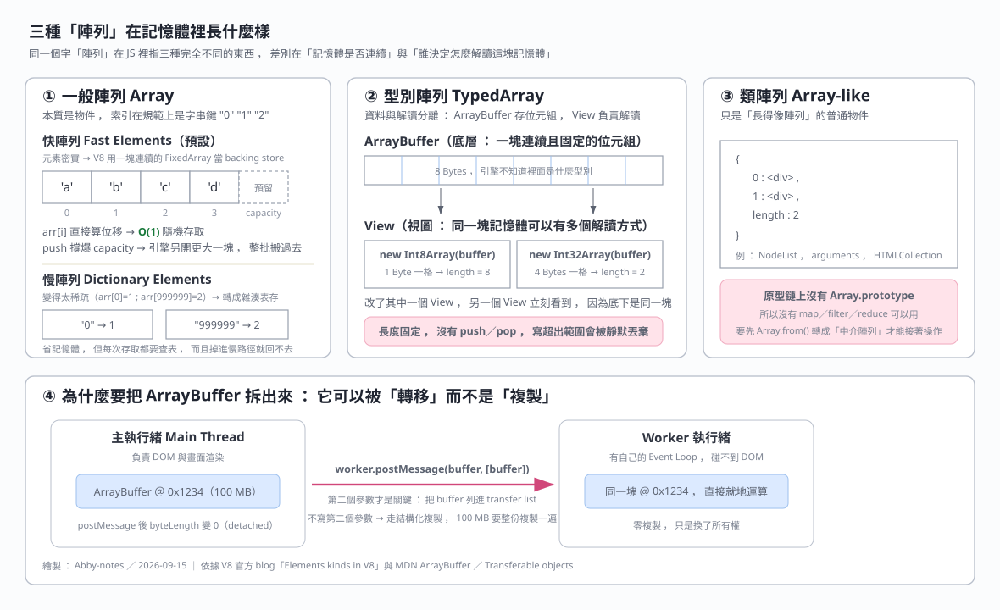

| 名稱 | 它到底是什麼 | 記憶體佈局 | 長度 | 有沒有 map／filter |
|---|---|---|---|---|
| 一般陣列 Array | 一個有特殊 length 行為的物件 | 預設連續（fast elements） ， 太稀疏時轉雜湊表（dictionary elements） | 動態 | 有 |
| 型別陣列 TypedArray | 掛在 ArrayBuffer 上的一層「解讀方式」 | 嚴格連續的位元組 | 建立當下固定 | 有大部分 ， 沒有 push／pop |
| 類陣列 Array-like | 只有 length 與數字鍵的普通物件 | 就是一般物件的屬性表 | 看物件自己怎麼定 | 完全沒有 |
| 中介陣列 Intermediary Array | 不是 API ， 是「過程中的暫存陣列」這個概念 | 就是一般陣列 | 動態 | 有 |
規範定義的 array index 是「可以轉回同一個字串的非負整數字串」 ， 所以 arr[0] 與 arr['0'] 取到同一格。
但這是「語意上」的規定 ， 不代表引擎真的去字串化 ， 見 (d)。
length 回傳的是「最大整數索引 + 1」 ， 不是元素個數const arr = ['apple'];
arr[100] = 'banana';
arr.length; // 101 ，不是 2
arr.length = 1; // 反過來手動改 length 會把後面的元素砍掉
arr; // ['apple']lengthconst arr = [1, 2];
arr.customKey = 'I am not an index';
arr.length; // 2
arr.customKey; // 'I am not an index'一塊連續的 backing store ， arr[i] 直接算位移 ， 所以是 O(1)。
FixedArray ， 只有在 (e) 的情況才會退化成雜湊表。
V8 官方 blog 的說法是 ： fast elements 是單純的 VM 內部陣列 ， property index 直接對應 elements store 的 index ；但對「只有少數格子有值的超大稀疏陣列」來說太浪費 ， 於是改成 dictionary mode。
一旦被標記成 holey（有洞） ， 之後就算把洞都補滿也永遠是 holey ；一旦升級成比較一般的 kind 也退不回去。
delete arr[i] ， 也不要 new Array(n) 先開洞再填 ，
用 push 或 Array.from({length:n}, ...) 讓它保持 packed。
V8 先給陣列一個預設 capacity → push 把元素塞爆 capacity → 引擎在 Heap 重新申請一塊更大的連續記憶體 → 把舊資料整批複製過去 → 釋放舊空間 ， 整個過程對開發者透明。
JSObject::NewElementsCapacity 大約是「舊容量 + 位移 + 16」 ，
但網路二手整理對位移量有 >> 1 與 >> 2 兩種矛盾說法 ， 要用請以原始碼為準。
std::vector 的常見做法 ， 不要跟 V8 混為一談。
ArrayBuffer 只是向作業系統要到的一塊連續位元組 ， 它自己不知道裡面是整數還是浮點數 ；
TypedArray 本身不存資料 ， 它是一張格式卡 ， 負責告訴引擎「請把這塊 buffer 當成某種數字格式來讀寫」。
所以建立 View 的時候一定要把 buffer 傳進去 ， 因為 View 必須寄生在某個 buffer 之上。
const buffer = new ArrayBuffer(8); // 8 Bytes
const i8 = new Int8Array(buffer); // 1 Byte 一格 → length 8
const i32 = new Int32Array(buffer); // 4 Bytes 一格 → length 2
i32[0] = 1000;
i8[0]; // 底下是同一塊記憶體，i8 立刻看到 1000 的最低位元組push／popTypeError ， 也不會擴充長度 ， 讀回來是 undefined。
const ta = new Int32Array(3);
ta[10] = 99;
ta.length; // 3
ta[10]; // undefined ，不會報錯，這比報錯更難 debug// 路線一：手動擴容（就是 (g) 裡引擎幫一般陣列做的事，自己做一遍）
let oldArr = new Int32Array([10, 20, 30]);
const newArr = new Int32Array(oldArr.length * 2);
newArr.set(oldArr); // 把舊資料整批複製進去
newArr[3] = 40;
oldArr = newArr;
// 路線二：resizable ArrayBuffer（建立時就先講好上限）
const buf = new ArrayBuffer(12, { maxByteLength: 40 });
const view = new Int32Array(buf); // 不給長度 → 會跟著 buffer 伸縮
view.length; // 3
buf.resize(20);
view.length; // 5原型鏈上沒有 Array.prototype 。 常見的有 NodeList、arguments、HTMLCollection。
它指的是 ： 為了得到最終結果 ， 在中間步驟臨時建立、用完即丟的暫存陣列。
const numbers = [1, 2, 3, 4, 5];
const result = numbers
.filter(n => n % 2 !== 0) // 產生中介陣列 [1, 3, 5]
.map(n => n * 2); // 產生最終結果 [2, 6, 10]幾十筆無所謂 ；但如果原始陣列有一百萬筆 ， filter 產生的中介陣列會瞬間吃掉大量記憶體又立刻被丟棄 ， 觸發 GC 造成畫面卡頓。
要避免就改寫成單一 for 迴圈或用 Generator ， 一次走完不落地。
Array.from() 的產物就是一個中介陣列const divs = document.querySelectorAll('div'); // NodeList ，沒有 map
const divArray = Array.from(divs); // 中介陣列，這時才有 map鏈結串列的節點是 [Data | Next] ， 變數只記得 Head 的位址 ， 要拿第 n 個就得做 n 次 current = current.next ， 完全無法跳關。
目標位址 = 起始位址 + (索引 × 單一元素大小)
arr[3] → 1000 + (3 × 4) = 1012| 操作 | 陣列 Array | 單向鏈結串列 | 為什麼 |
|---|---|---|---|
| 讀特定位置 get(i) | O(1) | O(n) | 陣列算位址 ， 鏈結串列要順著指標走 |
| 搜尋特定數值 | O(n) | O(n) | 兩者都不知道值在哪 ， 都要從頭查 |
| 頭部新增／刪除 | O(n) | O(1) | 陣列要把後面全部搬一格 ， 鏈結串列只改 Head 指標 |
鏈結串列每個節點都顯式存一個 next 指標 ， JS 陣列底層沒有這種指標鏈 ；就算退化成 dictionary mode 也是雜湊表而不是鏈結串列。
postMessage 的第二個參數（transfer list）const buffer = new ArrayBuffer(1024 * 1024 * 100); // 100 MB
worker.postMessage(buffer, [buffer]); // 第二個參數才是 transfer list
buffer.byteLength; // 0 ！已經 detached主執行緒把記憶體所有權移交給 Worker → 瀏覽器不複製任何資料 → Worker 拿到同一塊記憶體 → 主執行緒那份立刻 detached。
任何時刻只有一份 ArrayBuffer 真正握有底層記憶體。要「兩邊同時看得到」得改用 SharedArrayBuffer（而且需要 COOP／COEP 標頭）。
Worker 直接在原記憶體位置上算完再轉回來 ， 全程零複製。
| Web Worker（Dedicated Worker） | Service Worker | |
|---|---|---|
| 用途 | 巨量計算、檔案／影像解析 | 攔截網路請求、快取、離線、推播 |
| 生命週期 | 跟著開啟它的頁面 | 事件驅動 ， 閒置時瀏覽器會主動終止它 |
| 適合長時間運算 | 適合 | 不適合 ， 做到一半可能被殺掉 |
| 能不能碰 DOM | 不能 | 不能 |
new Int32Array(3) 寫入 ta[10] = 99 會丟出 RangeError。ta.length 還是 3 ， ta[10] 讀回來是 undefined。這正是 (j) 提到 Gemini 講錯的地方。const a = ['x']; a[100] = 'y'; 之後 a.length 會是 101。length 是「最大整數索引 + 1」 ， 不是元素個數 ， 中間 99 格是洞。worker.postMessage(buffer) ， 就能達成零複製傳輸。postMessage(buffer, [buffer]) 的 transfer list。unshift 是 O(n) ， 但單向鏈結串列在頭部插入是 O(1)。Q1. 為什麼 TypedArray 要設計成「必須寄生在 ArrayBuffer 上」 ， 而不是自己直接存資料 ？ 這樣拆開有什麼好處 ？
ArrayBuffer 負責持有一塊連續的原始位元組 ， 它不帶任何型別資訊 ；
TypedArray 只是一張「格式卡」 ， 負責告訴引擎要用幾個 Byte 一格、有號還是無號、整數還是浮點去解讀。
Int32Array 讀檔頭、後面用 Uint8Array 讀像素 ， 不用複製。
Q2. 同事寫了 const arr = new Array(1000); arr[0] = 1; arr[999] = 2; 說這樣「先開好空間比較快」。請說明這段話錯在哪裡 ， 以及你會怎麼改寫。
new Array(1000) 建立的是一個全是洞的 holey 陣列 ， V8 會把它標記成 holey elements kind ， 而 elements kind 的轉換是單向的 ， 之後就算把 1000 格都填滿也回不到 packed ， 每次存取都要多做一次原型鏈檢查。
Map 或普通物件表達稀疏語意 ；如果真的要 1000 格 ， 用 Array.from({ length: 1000 }, () => 0) 或 new Array(1000).fill(0) 一次填滿 ， 讓它維持 packed。
Q3. 一個一百萬筆的陣列要做 filter 再 map ， 為什麼會卡頓 ？ 講清楚中介陣列跟 GC 的關係 ， 並給兩個改寫方向。
filter 會配置一個全新的陣列把符合條件的元素放進去 ， 這就是中介陣列 ；接著 map 又配置第二個全新陣列。
也就是說一百萬筆資料在瞬間被額外配置了一到兩份 ， 而中介陣列在 map 跑完後立刻變成垃圾。
for 迴圈（或一次 reduce） ， 只走一遍、只配置一個結果陣列。
ArrayBuffer 轉移給 Worker 就地算完再轉回來。
ArrayBuffer 轉移的是「指標的所有權」 ， 是傳址觀念推到極致的版本（傳完來源端還會失效）。Array.from 在那篇是「通用工廠」 ， 在本篇 (o) 是「產生中介陣列的手段」。| 主題 | 題目 |
|---|---|
| 陣列 O(1) 索引 vs 雜湊表查找 | 1. Two Sum |
| 親手實作單向鏈結串列的 O(n) 走訪 | 707. Design Linked List |
| 親手實作雜湊表（對應 dictionary elements） | 706. Design HashMap |
| in-place 就地操作 ， 不開中介陣列 | 189. Rotate Array |
| 稀疏／孔洞與雙指標就地覆寫 | 27. Remove Element |
| NeetCode 陣列與雜湊表單元 | Arrays & Hashing |
| 主題 | 連結 | 版本／時間 |
|---|---|---|
| 本篇的原始對話（Gemini） | JavaScript 陣列不支援字串鍵 | 對話擷取於 2026-09-15 |
| fast elements 與 dictionary elements ， packed／holey 單向轉換 | Elements kinds in V8 | V8 官方 blog ， 2017-09-12 發表 ， 查證於 2026-09-15 |
| ArrayBuffer 總覽與 resizable | MDN ArrayBuffer | 查證於 2026-09-15 |
| ArrayBuffer.prototype.resize() | MDN resize() | 查證於 2026-09-15 |
| Transferable objects（轉移後來源端 detached） | MDN Transferable objects | 查證於 2026-09-15 |
| SharedArrayBuffer（兩邊同時存取的替代方案） | MDN SharedArrayBuffer | 查證於 2026-09-15 |
| V8 擴容倍率的二手說法（彼此矛盾 ， 僅供參考） | Why Dynamic Arrays Aren't Actually Dynamic | 部落格 ， 查證於 2026-09-15 ， ⚠️ 非官方 |